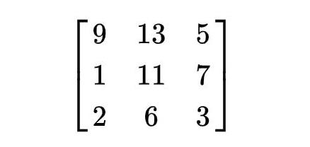
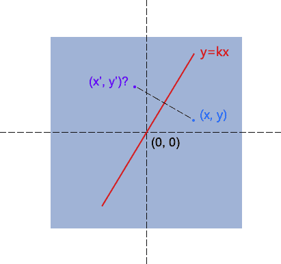

讲道理这个属性其实我很早就接触过了，但是只会最简单的几个方法，这次机缘巧合下，做了移动端的双指缩放功能，所以重新啃起来matrix属性。
当看到上面“Matrix(矩阵)”的时候，难免会心生畏惧（即使你已经学过），正常心理。实际上，这玩意确实有点复杂。
一般来说，CSS门槛低，无需程序基础或数学逻辑能力，也能做出点自我感觉不错的东西。然而，一般能轻松学到的东西，别人也都可以_(:з」∠)_。因此，想要在css里面持续深耕，就要学到一般人学不到的深度，学到一般人学不了的东西。那么matrix是你的不二选择ヾ(◍°∇°◍)ﾉﾞ。
CSS3中的矩阵

回到正题，CSS3中的矩阵指的是一个方法，写为matrix()和matrix3d()，前者是元素2D平面的移动变换(transform)，后者则是3D变换。2D变换矩阵为3x3, 如上面矩阵示意图；3D变换则是4x4的矩阵。
有些迷糊？恩，我也觉得上面讲述有些不合时宜。那好，我们先看看其他东西，层层渐进的讲讲transform属性。
具体关于transform属性，稍微熟悉的人都知道（不熟悉的建议先补补课），transform中有这么几个属性方法：
1 | .trans_skew { transform: skew(35deg); } /* 斜拉 */ |
斜拉(skew)，缩放(scale)，旋转(rotate)以及位移(translate)。
那你有没有想过，为什么transform:rotate(45deg);会让元素旋转45°, 其后面运作的机理是什么呢？
下面这张图可以解释上面的疑问：
无论是旋转还是拉伸什么的，本质上都是应用的matrix()方法实现的（修改matrix()方法固定几个值），只是类似于transform:rotate这种表现形式，我们更容易理解，记忆与上手。
换句话说，理解transform中matrix()矩阵方法有利于透彻理解CSS3的transform属性。
OK，现在上面提到的CSS3矩阵解释应该说得通了。
transform与坐标系统
用过transform旋转的人可以发现了，其默认是绕着中心点旋转的，而这个中心点就是transform-origin属性对应的点，也是所有矩阵计算的一个重要依据点。
当我们通过transform-origin属性进行设置的时候，矩阵相关计算也随之发生改变。反应到实际图形效果上就是，旋转拉伸的中心点变了！
举例来说，如果设置：
1 | transform-origin: bottom left; |
那么旋转时，旋转中心就会变成如上的设置。
matrix写法
CSS3 transform的matrix()方法写法如下：
1 | transform: matrix(a,b,c,d,e,f); |
蒙蔽了嘛，这么多参数。那，现在搬出我们大学学过的线性代数里的矩阵，╰(￣▽￣)╭ 当当当~
实际上，这6个参数，对应的矩阵就是：（注意书写方向是竖着的。）
x, y表示转换元素的坐标（变量）。
那后面的ax+cy+e怎么来的呢？
很简单，3x3矩阵每一行的第1个值与后面1x3的第1个值相乘，第2个值与第2个相乘，第3个与第3个，然后相加，如下图同色标注：
那ax+cy+e的意义是什么？
记住了，ax+cy+e为变换后的水平坐标，bx+dy+f表示变换后的垂直位置。
又迷糊了？不急，一个简单例子就明白了。
假设矩阵参数如下：
1 | transform: matrix(1, 0, 0, 1, 30, 30); /* a=1, b=0, c=0, d=1, e=30, f=30 */ |
现在，我们根据这个矩阵偏移元素的中心点，假设是(0, 0)，即x=0, y=0。
于是，变换后的x’坐标就是ax+cy+e = 1*0+0*0+30=30, y’坐标就是bx+dy+f = 0*0+1*0+30=30.
于是，中心点坐标从(0,0)变成了→(30, 0)。对照上面有个(30,30)的白点图，好好想象下，原来(0,0)的位置，移到了白点的(30,30)处，怎么样，是不是往右下方同时偏移了30px哈！！
所以实际上transform: matrix(1, 0, 0, 1, 30, 30);就等同于transform: translate(30px, 30px);。 注意：translate,rotate等方法都是需要单位的，而matrix方法e,f参数的单位可以省略。
戳这里看一个分解演示动画
聪明的你可能以及意识到了，matrix表现偏移就是：
1 | .wrapper{ |
transform matrix矩阵与缩放，旋转以及拉伸
偏移是matrix效果中最简单，最容易理解的，因此，上面很详尽地对此进行展开说明。下面，为了进一步加深对matrix的理解，会简单讲下matrix矩阵与缩放，旋转以及拉伸效果。
缩放(scale)
上面的偏移只要关心最后两个参数，这个缩放也是只要关心两个参数。哪两个呢？
如果你足够明察秋毫，应该已经知道了，因为上面多次出现的：transform: matrix(1, 0, 0, 1, 30, 30);已经出卖了。
发现没，matrix(1, 0, 0, 1, 30, 30);的元素比例与原来一样，1:1, 而这几个参数中，有两个1, 啊哈哈！没错，这两个1就是缩放相关的参数。
其中，第一个缩放x轴，第二个缩放y轴。
用公式就很明白了，假设比例是s，则有matrix(s, 0, 0, s, 0, 0);，于是，套用公式，就有：
1 | x' = ax+cy+e = s*x+0*y+0 = s*x; |
也就是上面那段，等同于scale(s, s);
好了，至此，无需多说了……
旋转(rotate)
既然transform: rotate(θdeg);里面有提到角度，所以说旋转相比前面两个要更高级些，要用到可能勾起学生时代阴影的三角函数。
方法以及参数使用如下（假设角度为θ）：matrix(cosθ,sinθ,-sinθ,cosθ,0,0)
结合矩阵公式，就有：
1 | x' = x*cosθ-y*sinθ+0 = x*cosθ-y*sinθ |
不过，说句老实话，就旋转而言，rotate(θdeg)这种书写形式要比matrix简单多了，首先记忆简单，其次，无需计算。例如，旋转30°，前者直接：transform:rotate(30deg);
而使用matrix表示则还要计算cos, sin值：transform: matrix(0.866025,0.500000,-0.500000,0.866025,0,0);
拉伸(skew)
拉伸也用到了三角函数，不过是tanθ，而且只与b, c两个参数相关，书写如下（注意y轴倾斜角度在前）：
matrix(1,tan(θy),tan(θx),1,0,0)
套用矩阵公式计算结果为：
1 | x' = x+y*tan(θx)+0 = x+y*tan(θx) |
对应于skew(θx + "deg", θy+ "deg")这种写法。
其中，θx表示x轴倾斜的角度，θy表示y轴，两者并无关联。
matrix的作用
你可能会想问，既然有简单的skew, rotate..，那让人头大的matrix有何用？
即便是稍微复杂的双指缩放需求，也可能用transform-origin、rotate、translate拼拼凑凑出来合适的元素位移效果。
确实，对于一般地交互应用，transform属性默认提供的些方法是足够了，但是，一些其他的效果，如果transform属性没有提供接口方法，那你又该怎么办呢？比方说，“镜像对称效果”！
没辙了吧，这是，就只能靠matrix矩阵了。要知道，matrix矩阵是transform变换的基础，可以应付很多高端的效果，算是一种高级应用技巧吧。
OK，这里就大概解释下，如何使用CSS3 transform matrix矩阵实现镜像效果。

因为该轴永远经过原点，因此，任意对称轴都可以用y = k * x表示。
那这个martix如何得到的呢？啊，高中数学来了，就当再高考一次吧，如上图，已经y=kx，并且知道点(x, y)坐标，求其对称点(x’, y’)的坐标？
一是垂直，二是中心点在轴线上，因此有：
1 | (y-y') / (x - x') = -1/ k → ky-ky' = -x+x' |
然后，把x’和y’提出来，就有：
1 | x' = (1-k*k)/(k*k+1) *x + 2k/(k*k+1) *y; |
再结合矩阵公式：
1 | x' = ax+cy+e; |
我们就可以得到：
1 | a = (1-k*k)/(k*k+1); |
则matrix表示就是：
1 | transform: matrix((1-k*k)/(1+k*k), 2k/(1 + k*k), 2k/(1+k*k), (k*k-1)/(1+k*k), 0, 0) |
关于matrix3d
3D变换虽然只比2D多了一个D，但是复杂程度不只多了一个。从二维到三维，在矩阵里头是从3x3变成4x4, 9到16了。
其实，本质上很多东西都与2D一致的，只是复杂度不一样而已。
这里就只拿一个最简单的例子作为讲解，对于3D缩放效果，其矩阵如下：
代码表示就是：
1 | transform: matrix3d(sx, 0, 0, 0, 0, sy, 0, 0, 0, 0, sz, 0, 0, 0, 0, 1) |
具体其他的属性，甚至是更复杂的效果，自己拿出本本算下公式什么的，也就一目了然啦
…光研究2D的已经很头秃了，希望大家都不会遇到3D的需求叭(:з」∠)